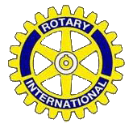

ROTARY CLUBE DE ARAXÁ |
|||||
| Quem somos | Fotos | Reuniões | Contatos | ||
ROTARY CLUB DE ARAXÁDistrito 4770
Fundado com 29 sócios em 19/06/1948 PresidenteMARIA DO CARMO PINHEIROPresidente da Casa da AmizadeROSÉLIA DE OLIVEIRA CAMPOSREUNIÕES ÀS QUARTAS-FEIRAS - 20h Sede: Avenida Geraldo Porfírio Botelho, 2335 Cep: 38.184.250 - Telefone: (34) 3662-5518 PROVA QUÁDRUPLADo que pensamos, dizemos ou fazemos:1. É A VERDADE?
Será que sou um rotariano de verdade? 2. É JUSTO PARA TODOS OS INTERESSADOS?
Tenho sido justo com os meus companheiros de
ideal? 3. CRIARÁ BOA VONTADE E MELHORES AMIZADES?
Tenho boa vontade ou estou sempre
procurando uma desculpa e um pretexto para dizer
"não posso"? 4. SERÁ BENÉFICO PARA TODOS OS INTERESSADOS ?
Sinto que minha atuação rotária tem sido útil e
benéfica em prol do meu clube? |
|||||
| © COPYRIGHT - LUIZ FERNANDO - TODOS OS DIRETOS RESERVADOS | |||||